See, for every vendor and every purchase order, what has been billed, what has been paid, what is still due and what is not billed yet. Read it on screen, print it as a branded PDF (Arabic right-to-left included) or export it to Excel with live subtotals.
Buyers think in purchase orders, accountants think in bills and payments. This report joins the two.
Four steps, nothing to configure.
Screenshots use demo data: four vendors with orders in USD, EUR and SAR, partial payments and overdue bills, reported as of 11/03/2026 in a USD company.
Purchase › Reporting › Pending Payments, next to the standard Purchase analysis, for users in the Purchase / Administrator group.
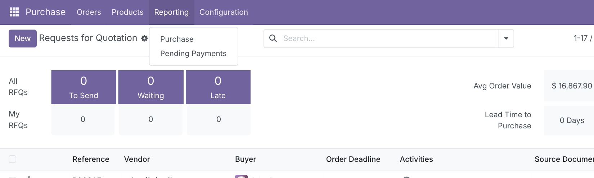
Vendors (contacts of a company are included), Purchase Orders, a period Based On the Purchase Order Date or the Vendor Bill Date, an As of Date, and options: Pending Amounts (bills due + not yet billed, or bills due only), Include Settled Orders, Show Bills & Payments. Empty filters mean “all”.
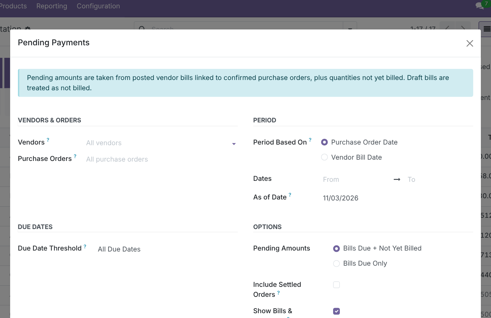
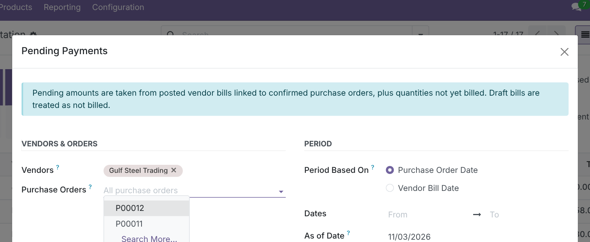
Due Date Threshold: All Due Dates, Overdue Only, Not Yet Due, Due Within Next N Days or a Due Date Range, all measured from the As of Date. Plan next week’s payment run or chase what is already late.
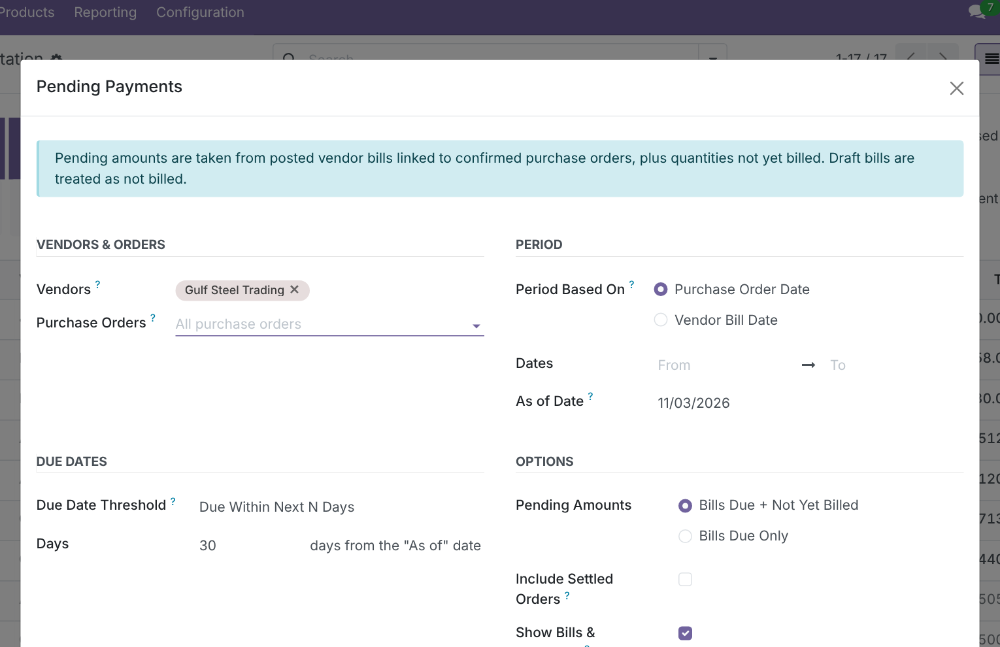
View opens one row per order: PO Amount in the order currency, then Billed, Paid, Due, Not Billed, Outstanding and Overdue in the company currency with vendor subtotals and grand totals, Days Late, Next Due and a colour-coded Status. Print PDF and Export Excel are one click away in the list header.
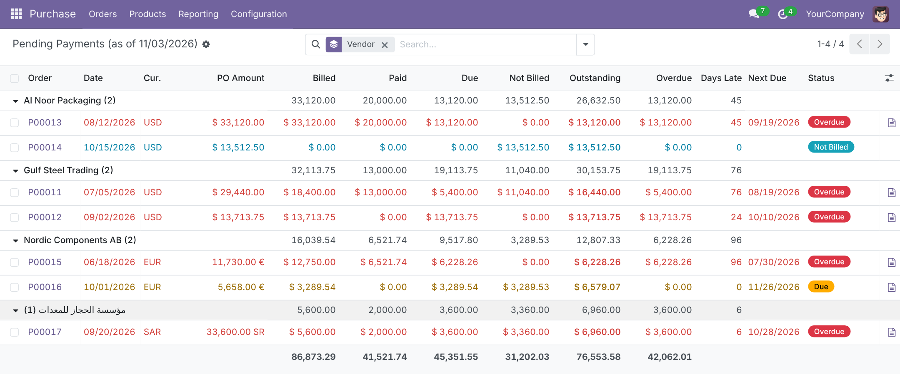
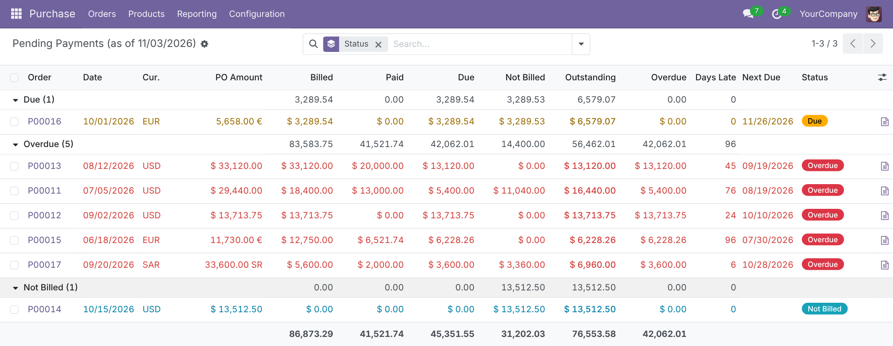
Open a row to see the order in its own currency and in the company currency, then Vendor Bills & Payment Allocations: each bill with its Share % of the order, due date, days late, paid and residual amounts. Open a bill line to list every Payment, Credit Note and Exchange Difference reconciled with it. Buttons open the Order and its Bills.
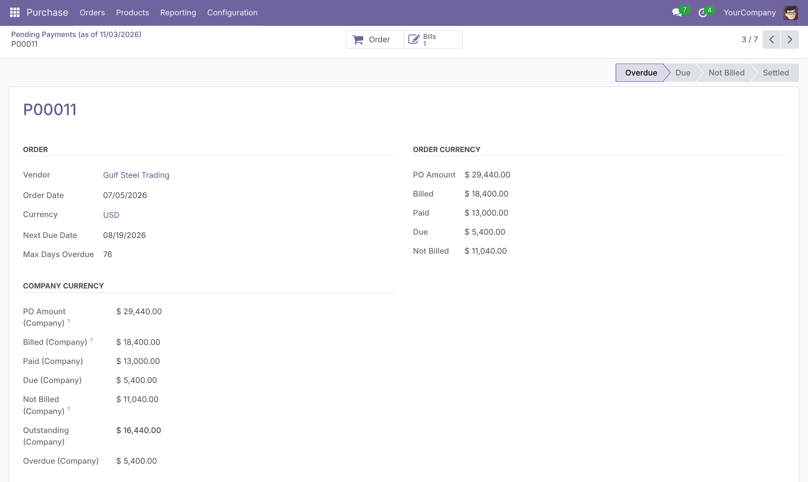
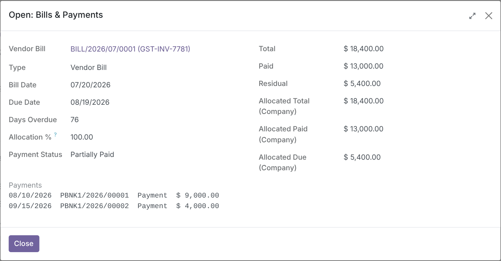
Landscape A4 on your company layout: the active filters, six KPI cards (Billed, Paid, Due on Bills, Not Yet Billed, Overdue, Total Outstanding), one section per vendor with bills and payments under each order, vendor subtotals, then a Currency Breakdown and the Grand Total. Untick Show Bills & Payments for a one-line-per-order summary. The report keeps its own table design whichever Document Layout the company uses (Light, Bold, Boxed or Striped).
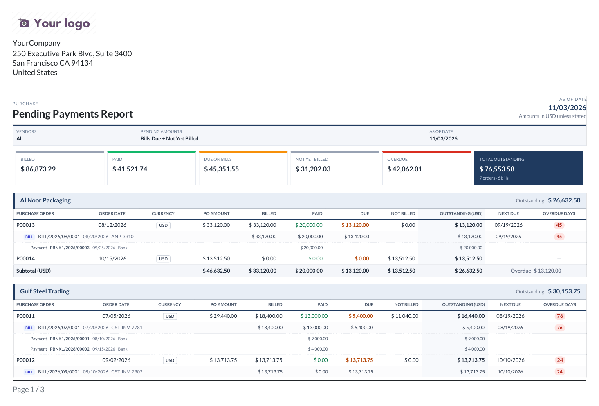
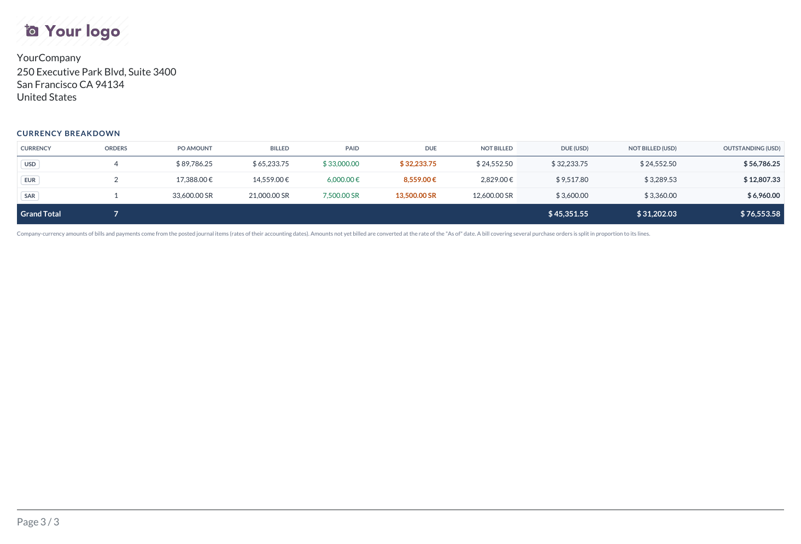
Printed by a user in Arabic, the whole report flips right to left: columns, alignment, borders and indents. Mixed text such as bill numbers, references, dates and amounts with Arabic currency symbols is isolated piece by piece, so wkhtmltopdf never overlaps the glyphs. Every label of the module is translated (ar_001).
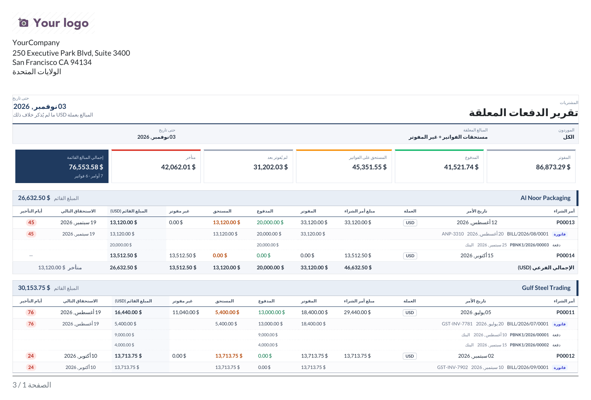
Three sheets. Pending Payments: one row per order, vendor Subtotal rows and a Grand Total written as SUBTOTAL(9,…) formulas, so they still add up after you filter or edit; frozen headers, autofilter, number formats per currency. Bills & Payments: every bill with its allocation, and its payments indented below. Currency Summary: totals per currency. Sheets open right to left for Arabic users.
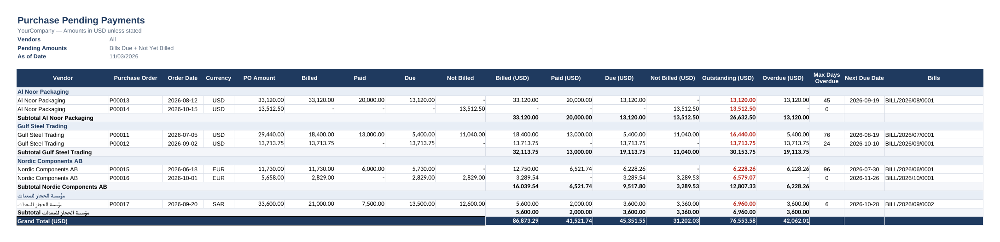
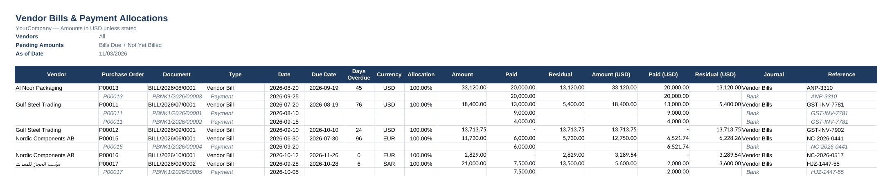
Confirmed orders (Purchase Order or Locked) and the posted vendor bills and refunds linked to their lines.
| Column | Source |
|---|---|
| Billed | Total of the payable journal items of the posted bills (refunds negative), times the order’s share of each bill |
| Due | Residual of those journal items, so every partial payment and reconciliation counts exactly as booked |
| Paid | Billed − Due |
| Not Billed | Order quantity not covered by posted bills (units converted) × line total per unit, tax included; converted at the As of Date rate |
| Outstanding | Due + Not Billed (or Due only, with Bills Due Only) |
| Overdue / Days Late | Due on bills whose due date is before the As of Date; days counted from the due date |
The cases that make naive payable reports disagree with accounting.
Same audience as the standard Purchase reporting.
| Who | Sees |
|---|---|
| Purchase / Administrator | The Pending Payments menu, wizard, results, PDF and Excel |
| Purchase / User | No access (like the standard Purchase reporting menu) |
| Each user’s results | Wizard runs and result lines are temporary and readable only by the user who ran them; the Excel download checks this too |
| Multi-company | The report runs on the current company: its orders, its bills, its currency |
| Odoo version | 18.0, Community and Enterprise |
| Depends on | purchase |
| Python dependency | xlsxwriter (already required by Odoo) |
| Menus | Purchase › Reporting › Pending Payments |
| Settings | None |
| Models | po.pending.payment.wizard, po.pending.payment.line, po.pending.payment.bill (transient), report report.po_pending_payments.report_pending_payments |
| Reports & routes | QWeb PDF on its own A4 landscape paper format; Excel download at /po_pending_payments/xlsx/<id> |
| Automated tests | 18: partial bills and payments, vendor/contact, order, order-date and bill-date filters, all due thresholds, foreign currency vs. journal items, bills split across orders, credit notes, settled orders and scope, validation, access rights, list view, PDF, Excel formulas, Arabic RTL and translations, bidirectional text, payments not yet posted to accounting |
| Languages | English, Arabic (ar_001) |
| License | LGPL-3 |
Questions, a demo, or an adaptation to your own process? Get in touch.
✉ ibrahim.yahiah@gmail.com LinkedIn: Ibrahim YahiaAuthor: Ibrahim Yahia · License: LGPL-3